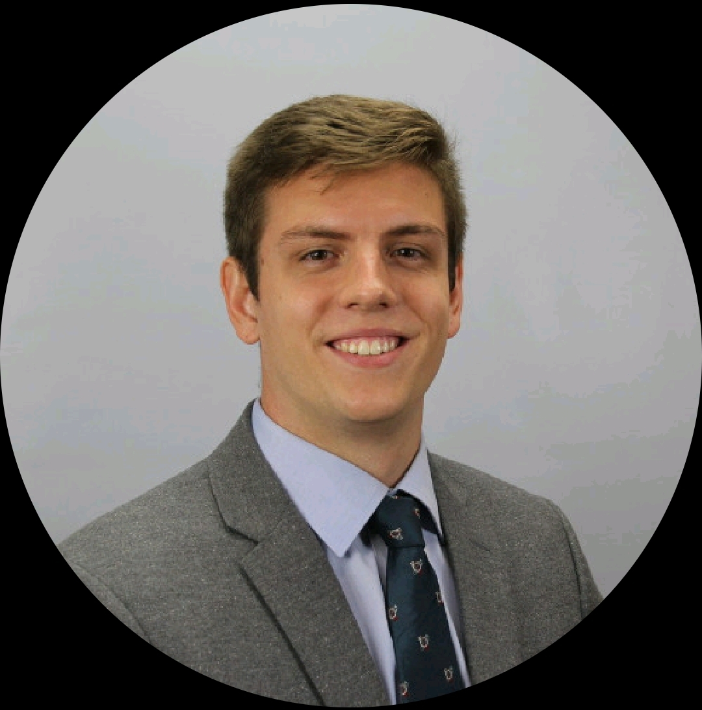

About Me
I am a young engineer that is enticed by complex processes, both natural and man made. Ever since the good fortune of having an incredible chemistry teacher in high school, my interest in the natural world and the ways that we transform and utilize it has branched and grown across the landscape of science. My education in chemical engineering has built upon this curiosity and allowed me to develop a powerful lens to observe and analyze the world through. I have an open mind about where I see my career going, but I know that I want to continue learning a variety of new skills through a diverse set of experiences. Overall, my career goal is to leverage my interest in the natural world to create value, push boundaries, and impact lives.